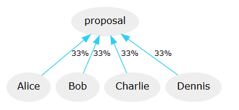

Multi-Signature¶
Authorities¶
In BitShares an authority consists of one or many entities that authorize an action, such as transfers or trades.
- An authority consists of one or several pairs of an account name with a weight.
- In order to obtain a valid transaction, the sum of the weights from signing the parties has to exceed the threshold as defined in the permissions.
- Examples
- We explain some examples to shed some light on the used terminology and the use-cases. We assume that a new account is created with it’s active permissions set as described below. Note that the same scheme also works for the owner permissions.
(Flat) Multi-Signature¶
A flat multi-signature scheme is composed of M entities of which N entities must sign in order for the transaction to be valid. Now, in BitShares, we have weights and a threshold instead of M and N. Still we can achieve the very same thing with even more flexibility as we will see now.
Let’s assume, Alice, Bob, Charlie and Dennis have common funds. We want to be able to construct a valid transaction if only two of those agree. Hence a 2-of-4 (N-of-M) scheme can look as follows:
| Account | Weight |
|---|---|
| Alice | 1 |
| Bob | 1 |
| Charlie | 1 |
| Dennis | 1 |
| Threshold: | 3 |
This means that each party has the same weight of 1 while 3 parties need to sign the transaction/proposal.
In other words: Alice, Bobe, Charlie and Dennis, each have 33% weight while 100% must be reached.
{kind=link}
All four participants have a weight of 33% but the threshold is set to 51%. Hence only two out of the four need to agree to validate the transaction.
Alternatively, to construct a 3-of-4 scheme, we can either decrease the weights to 17 or increase the threshold to 99%.
(Flat) Flexible Multi-Signature¶
With the threshold and weights, we now have more flexibility over our funds, or more precisely, we have more control. For instance, we can have separate weights for different people. Let’s assume Alice wants to secure here funds against theft by a multi-signature scheme but she does not want to hand over too much control to her friends. Hence, we create an authority similar to:
| Account | Weight |
|---|---|
| Alice | 49% |
| Bob | 25% |
| Charlie | 25% |
| Dennis | 10% |
| Threshold: | 51% |

Now the funds can either be accessed by Alice and a single friend or by all three friends together.
Multi-Hierarchical Flexible Multi-Signature¶
Let’s take a look at a simple multi-hierarchical corporate account setup. We are looking at a company that has a Chief of Financial Officer (CFO) and a some departments working for him, such as the Treasurer, Controller, Tax Manager, Accounting, etc. The company also has a CEO that wants to have spending privileges. Hence we construct an authority for the funds according to:
| Account | Weight |
|---|---|
| CEO.COMPANY | 51% |
| CFO.COMPANY | 51% |
| Threshold: | 51% |
{kind=link}
whereas CEO.COMPANY and CFO.COMPANY have their own authorities. For instance, the CFO.COMPANY account could look like:
| CFO.COMPANY | Weight |
|---|---|
| Chief.COMPANY | 51% |
| Treasurer.COMPANY | 33% |
| Controller.COMPANY | 33% |
| Tax Manager.COMPANY | 10% |
| Accounting.COMPANY | 10% |
| Threshold: | 51% |
{kind=link}
This scheme allows:
- the CEO to spend funds
- the Chief of Finance Officer to spend funds
- Treasurer together with Controller to spend funds
- Controller or Treasurer together with wither the Tax Manager or Accounting to spend funds.
Hence, a try of arbitrary depth can be spanned in order to construct a flexible authority to reflect mostly any business use-case.